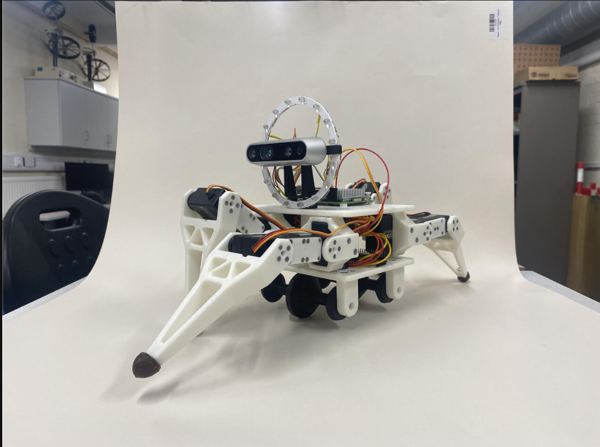

AI / ML Engineer
Computer vision · reinforcement learning · applied deep learning
I build deep learning and reinforcement learning systems, and I care more about proving a model works under real constraints than getting it to train once. MEng in Mechatronic and Robotic Engineering from the University of Sheffield.
An end-to-end PyTorch pipeline to automate skin-layer segmentation in Optical Coherence Tomography scans, replacing hand-crafted edge filters that fail against low-contrast tissue and speckle noise. Curated and annotated a 212-image clinical dataset, expanded to 1,272 via augmentation, then benchmarked three architectures under one evaluation protocol.
Mean IoU by architecture. U-Net++ also holds the compute cost, ~2× the inference time of U-Net.
A custom 8×8 Gymnasium environment built to study a question that matters far beyond grid worlds: what happens to an agent's behaviour as you raise the cost of unsafe actions? Trained PPO agents across six penalty levels and tracked task performance and safety violations independently, mapping the trade-off frontier between the two.
Longer, safer paths as the safety penalty increases, the same coefficient trade-off behind balancing helpfulness vs. harmlessness in RLHF.
Whether a compound breaks down naturally or accumulates in the environment is a real regulatory question. Compared three classifiers on the UCI QSAR Biodegradation dataset (1,055 compounds, 41 molecular descriptors), with z-score normalisation fit only on training data to prevent leakage.
Test accuracy. Naive Bayes drops off once its conditional-independence assumption meets correlated descriptors.

A multidisciplinary group project under the UKRI Pipebots initiative, building a legged robot small enough to inspect underground pipes that people and larger vehicles can't reach. My focus was the embedded and control side: assembling and testing the modular leg design, writing embedded C++ for system checks, battery management, and sensor logic, and building a base station interface to manage communications and pre-deployment diagnostics.
Simulated demo code ahead of hardware arrival so software was ready the moment the robot was, then supported hardware-software integration and power testing across different operating conditions.
MEng, Mechatronic and Robotic Engineering — University of Sheffield, 2:1, 2022–2026. Specialised in machine learning, computer vision, and intelligent systems.
My work keeps landing on the same question in different clothes: does this system actually do what I intended, and how do I prove it rather than assume it? That question shows up whether I'm benchmarking segmentation models against clinical ground truth or watching a reinforcement learning agent's behaviour drift as I change its constraints.
Native Arabic speaker, based in Dubai, UAE. Open to relocation.